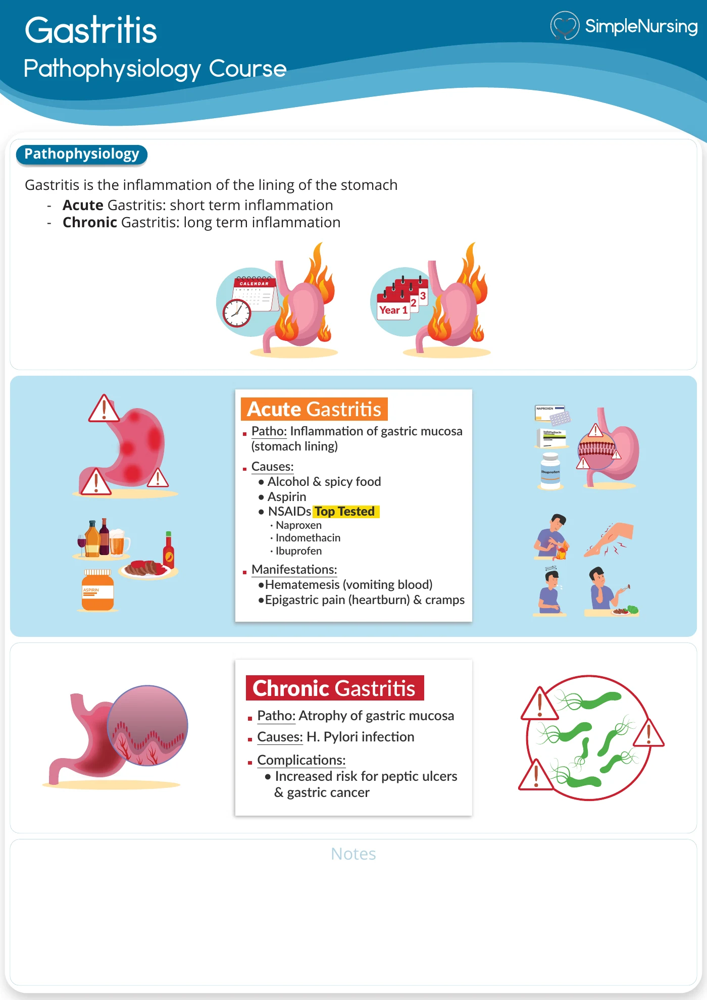
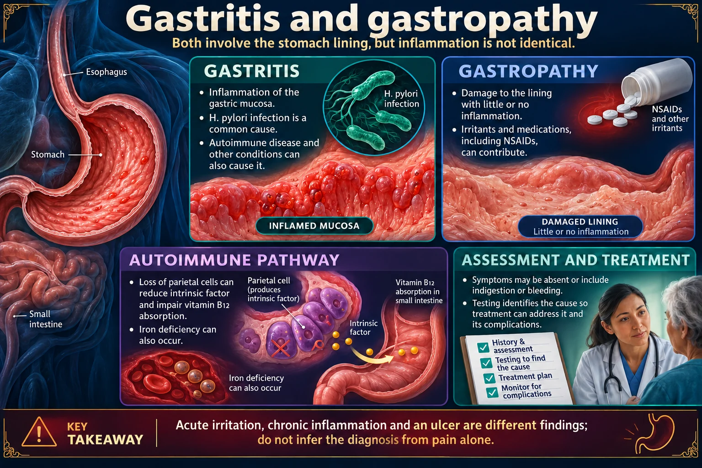

A client reports frequent use of NSAIDs for chronic joint pain. The nurse explains that NSAIDs contribute to gastritis and ulcers primarily by:
Answer
Inhibiting prostaglandin synthesis that protects the gastric mucosa
Reasoning
NSAIDs inhibit cyclooxygenase and reduce prostaglandin synthesis, decreasing the protective mucus and bicarbonate barrier of the gastric mucosa.
Clinical detail
This makes the mucosa vulnerable to acid injury.
Why the other answers do not fit
- Increasing production of protective mucus
NSAIDs inhibit cyclooxygenase and reduce prostaglandin synthesis, decreasing the protective mucus and bicarbonate barrier of the gastric mucosa.
- Neutralizing gastric acid
- Slowing gastric emptying
Shared reasoning for choices without a separate note: NSAIDs inhibit cyclooxygenase and reduce prostaglandin synthesis, decreasing the protective mucus and bicarbonate barrier of the gastric mucosa. This makes the mucosa vulnerable to acid injury.

